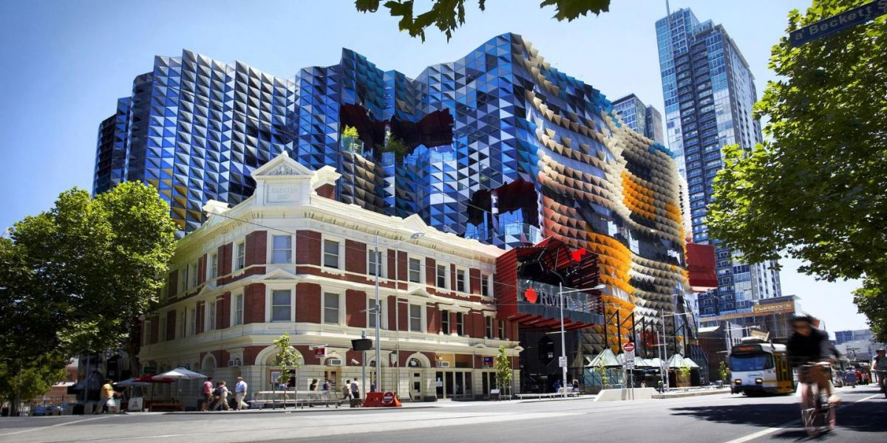
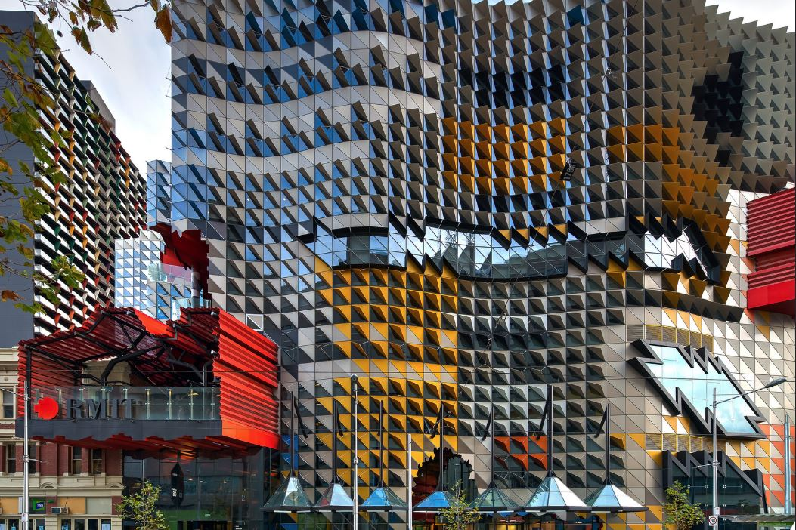
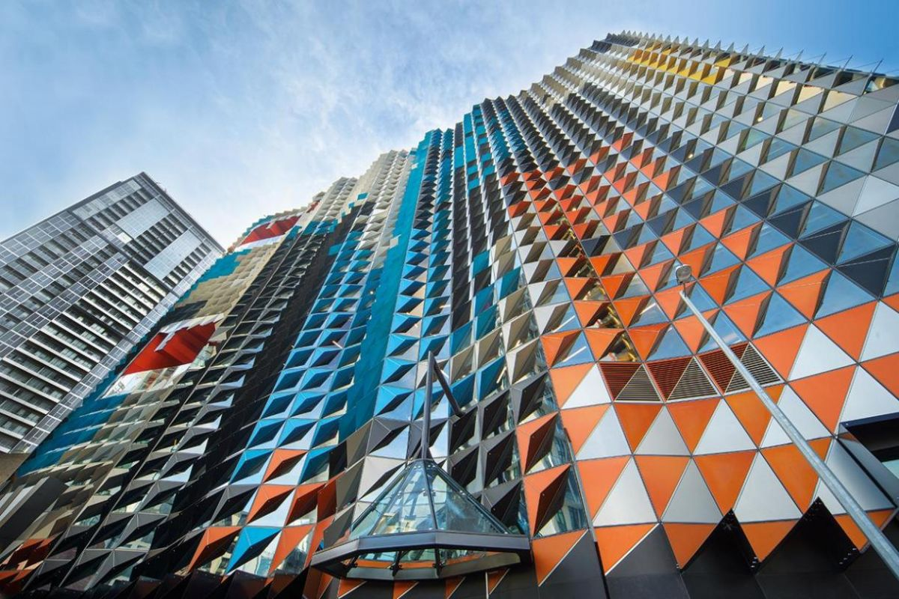
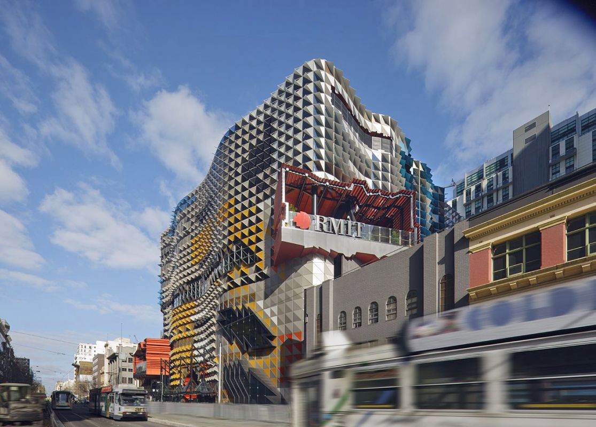
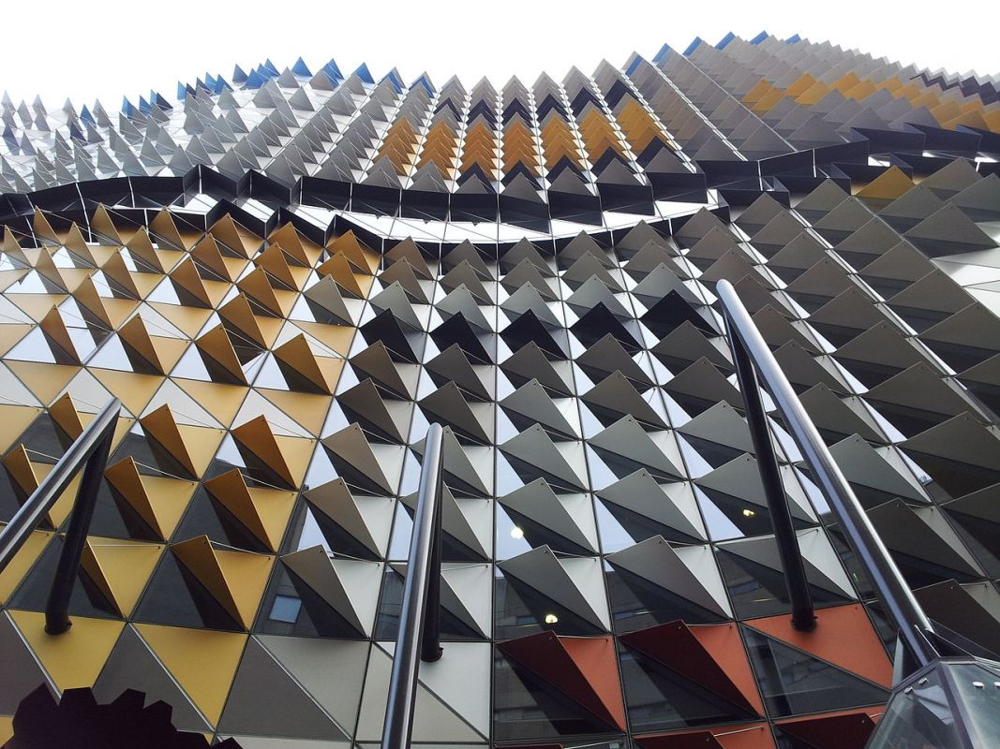
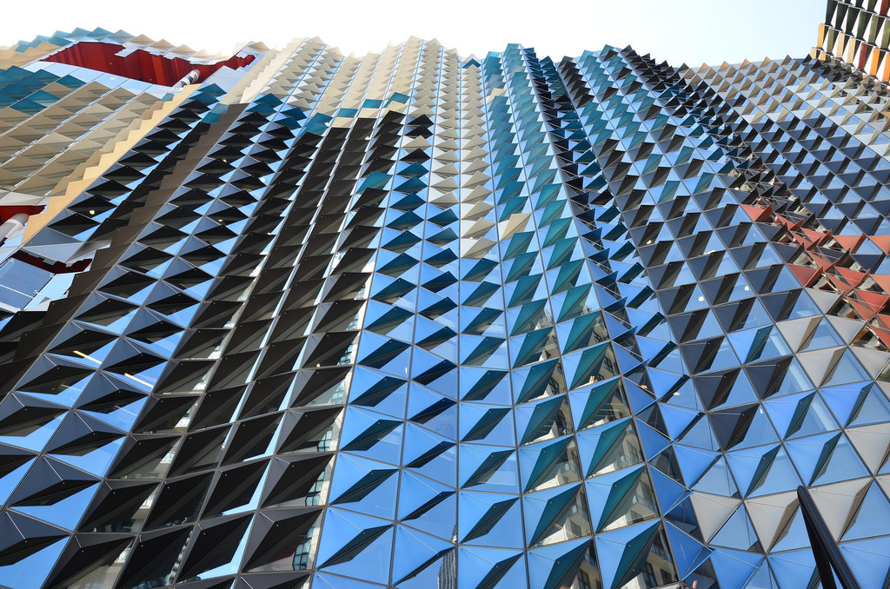

Venue
Conference Site: Building 80 (Swanston Academic Building), RMIT University, Melbourne
Introduction:
Swanston Academic Building (SAB) is a spectacular 11 storey facility and RMIT’s biggest infrastructure investment to date. The building covers a gross floor area (GFA) of 35,000 square metres and forms a significant part of RMIT’s Swanston Street precinct.
The fabric of SAB is predicated upon a commitment to transforming the educational process and incorporating the latest in technology and design thinking.. The building incorporates a range of environmentally sustainable features resulting in it achieving a Green Building Council of Australia 5-star Green Star Education Design rating.
The design approach to the building sought to locate it in dialogue with surrounding architecture, both in form and colour, resulting in a striking façade and interior that is uniquely Melbourne. SAB has received a number of state and national awards including Best Public Building in the 2014 Property Council of Australia awards.
There are more than 80 learning and teaching spaces in SAB with computing and projection facilities. There are 22 Project Room spaces, each with a teacher’s lectern connected to an AMX controller and touch-screen panel, and there are wall-mounted flat panel displays around the room. Vice-Chancellor and President, Professor Margaret Gardner AO, said it was a magnificent achievement.
ADDR: 445 Swanston Street Melbourne
Landmark:
     Map: